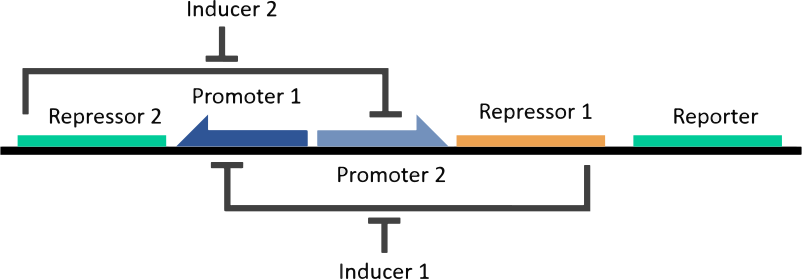
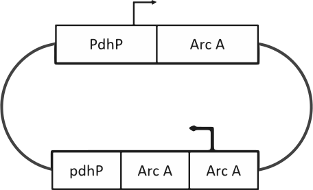

The Toggle switch is one of the synthetic gene-regulatory network designed by Gardner, Cantor and collins at the beginning of 2000. This network was constructed using two repressors and two constitutive promoters and each promoter is inhibited by the repressor that is transcribed by the opposing promoter. Toggle switch shows bistability over a wide range of parameter values, this bistability arises from the mutually inhibitory arrangement of the genes repressors. In absence of inducers, two states are possible:
Switching is activated introducing an inducer in the environment which inactivate one of the currently active repressor. The inducer allows the opposing repressor to be maximally transcribed until it stably represses the originally active promoter.
Theoretically toggle design does not require any specialized promoters, whit this in mind we decided to use the Pyruvate Dehydrogenase Complex (pdh) promoter containing a site which is recognized by RNA polymerase and a binding site for pdh repressive protein combined with arcA gene and the ompW promoter containing a binding site for RNA polymerase and ArcA repressive protein combined with pdhR gene.
The inducer to pdhR is the pyruvate and the inducer to arcA is the aerobic condition, in which arcB loses its kinase activity allowing the dephosphorylation of ArcA inactivating this protein and leading the gene expression.
Furthermore curiously, in many bacteria the ArcA protein is activated not only in anaerobic conditions then is activated by the addition of H2O2 to the environment showing a response to oxidative stress, but this phenomenon have not been demonstrated in E. coli.
